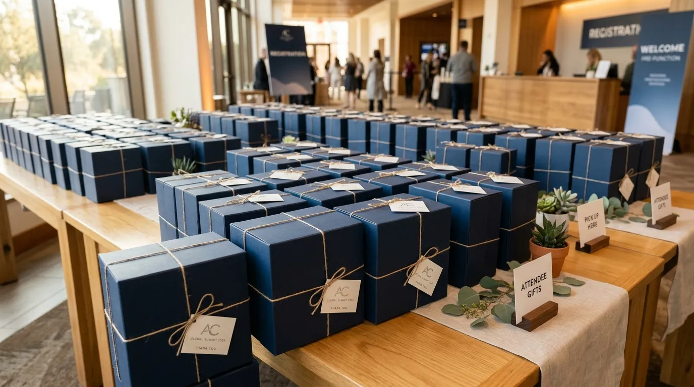
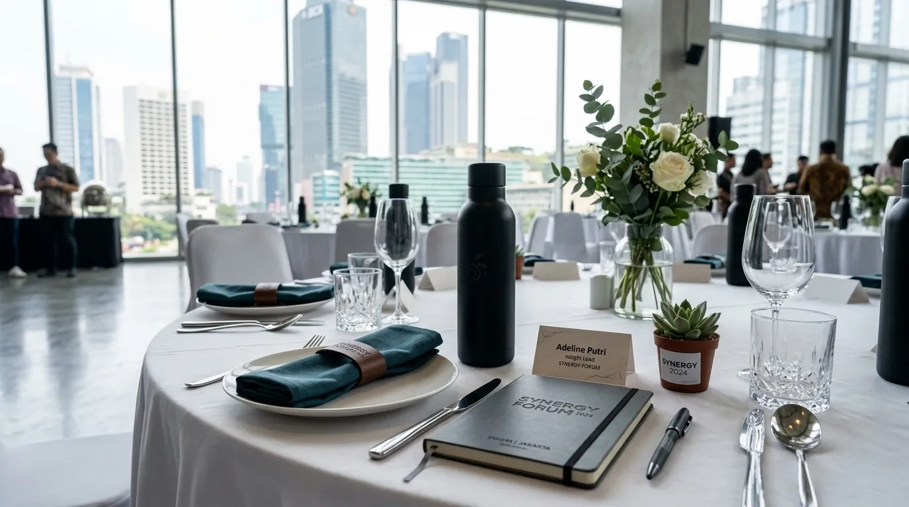

Souvenir Kantor Unik dengan Desain Minimalis untuk Event Perusahaan Melayani Jakarta, Bekasi, dan Sekitarnya
 Nazhima Nadine (Nad)
1 Agustus 2026
5 Menit Baca
Nazhima Nadine (Nad)
1 Agustus 2026
5 Menit Baca

Souvenir kantor unik dengan desain minimalis untuk event perusahaan adalah pilihan merchandise bergaya sederhana namun elegan, yang cocok digunakan untuk berbagai acara korporat di wilayah Jakarta, Bekasi, dan sekitarnya dengan kebutuhan produksi maupun pengiriman yang efisien.
Souvenir kantor unik dengan desain minimalis untuk event perusahaan adalah pilihan merchandise bergaya sederhana namun elegan, yang cocok digunakan untuk berbagai acara korporat di wilayah Jakarta, Bekasi, dan sekitarnya dengan kebutuhan produksi maupun pengiriman yang efisien. Desain minimalis memudahkan souvenir digunakan di berbagai jenis acara perusahaan. Lokasi penyedia yang dekat mempercepat proses produksi dan pengiriman. Wilayah Jakarta dan Bekasi memiliki kebutuhan event yang beragam, mulai dari acara korporat besar hingga gathering skala kecil. Koordinasi logistik lokal membantu mengurangi risiko keterlambatan acara. Pemilihan vendor terdekat dapat menekan biaya pengiriman souvenir.
- Apa Itu Souvenir Kantor Desain Minimalis untuk Event Perusahaan?
- Mengapa Lokasi Penyedia Souvenir Memengaruhi Kelancaran Event?
- Apa Saja Pertimbangan Khusus untuk Wilayah Jakarta?
- Apa Saja Pertimbangan Khusus untuk Wilayah Bekasi?
- Bagaimana Cara Memastikan Souvenir Sampai Tepat Waktu untuk Event?
- Kesimpulan
- FAQ
Apa Itu Souvenir Kantor Desain Minimalis untuk Event Perusahaan?
Souvenir kantor desain minimalis untuk event perusahaan adalah merchandise dengan tampilan sederhana, warna terbatas, dan bentuk fungsional, yang dirancang agar mudah diproduksi dalam jumlah besar tanpa mengurangi kesan profesional pada acara resmi perusahaan.
Desain minimalis dipilih karena sifatnya yang fleksibel untuk berbagai jenis acara, mulai dari seminar, pelatihan internal, gathering karyawan, hingga acara peluncuran produk. Tampilan yang sederhana memudahkan penyesuaian dengan tema acara tanpa perlu proses desain ulang yang rumit, sehingga waktu produksi dapat lebih efisien, terutama untuk event dengan jadwal yang ketat.

Di wilayah perkotaan seperti Jakarta dan penyangganya termasuk Bekasi, kebutuhan akan souvenir minimalis semakin tinggi seiring banyaknya kegiatan korporat yang diselenggarakan secara rutin, baik oleh perusahaan besar maupun bisnis skala menengah yang terus berkembang di kawasan tersebut.
Mengapa Lokasi Penyedia Souvenir Memengaruhi Kelancaran Event?
Lokasi penyedia souvenir memengaruhi kelancaran event karena berkaitan langsung dengan waktu produksi, proses pengecekan sampel, serta kecepatan distribusi barang menjelang hari pelaksanaan acara.
Penyedia yang berlokasi dekat dengan area penyelenggaraan acara umumnya dapat merespons kebutuhan mendadak dengan lebih cepat, misalnya perubahan jumlah pesanan atau revisi desain di menit-menit akhir. Kondisi ini sangat membantu tim penyelenggara acara yang sering kali menghadapi perubahan teknis menjelang hari H.
Selain itu, jarak yang lebih dekat juga mengurangi risiko keterlambatan pengiriman akibat kendala transportasi antarkota. Untuk acara dengan skala besar yang membutuhkan pengiriman dalam jumlah banyak, efisiensi jarak dan waktu tempuh menjadi pertimbangan penting agar souvenir sampai tepat waktu tanpa mengganggu jadwal acara secara keseluruhan.
Apa Saja Pertimbangan Khusus untuk Wilayah Jakarta?
Pertimbangan khusus untuk wilayah Jakarta meliputi tingginya intensitas kegiatan korporat, kebutuhan waktu produksi yang cepat, serta preferensi desain yang cenderung mengikuti tren perkotaan modern.
Sebagai pusat bisnis, Jakarta memiliki jumlah acara korporat yang relatif tinggi sepanjang tahun, mulai dari rapat tahunan, seminar industri, hingga acara peluncuran produk berskala nasional. Kondisi ini membuat kebutuhan souvenir sering kali bersifat mendesak dengan waktu persiapan yang terbatas, sehingga kecepatan proses produksi menjadi faktor yang sangat diperhatikan oleh penyelenggara acara.
Selain kecepatan, preferensi desain di wilayah ini juga cenderung mengikuti tren perkotaan yang modern dan minimalis, sejalan dengan karakter bisnis yang dinamis dan kompetitif. Souvenir dengan tampilan sederhana namun berkualitas premium umumnya lebih disukai dibandingkan desain yang terlalu ramai atau rumit.
Apa Saja Pertimbangan Khusus untuk Wilayah Bekasi?
Pertimbangan khusus untuk wilayah Bekasi meliputi pertumbuhan kawasan industri dan perkantoran yang pesat, kebutuhan pengiriman ke area yang lebih luas, serta permintaan souvenir dengan anggaran yang lebih fleksibel.
Sebagai kawasan penyangga Jakarta yang terus berkembang, Bekasi memiliki banyak perusahaan yang bergerak di sektor industri maupun jasa, sehingga kebutuhan souvenir kantor juga meningkat seiring pertumbuhan aktivitas bisnis di wilayah tersebut. Banyak perusahaan di kawasan ini membutuhkan pengiriman ke berbagai titik lokasi kantor atau pabrik yang tersebar, sehingga koordinasi logistik menjadi aspek yang perlu diperhatikan sejak awal proses pemesanan.
Dari sisi anggaran, perusahaan di wilayah Bekasi sering kali mencari opsi souvenir dengan rentang harga yang lebih fleksibel namun tetap menjaga kesan profesional, mengingat variasi skala bisnis yang cukup luas di kawasan ini, mulai dari perusahaan besar hingga unit usaha menengah.
Bagaimana Cara Memastikan Souvenir Sampai Tepat Waktu untuk Event?
Cara memastikan souvenir sampai tepat waktu untuk event dilakukan dengan menetapkan tenggat produksi yang realistis, melakukan konfirmasi jadwal pengiriman secara berkala, serta menyiapkan rencana cadangan apabila terjadi kendala logistik.
1. Tetapkan Tenggat Produksi yang Realistis
Menetapkan tenggat produksi yang realistis sejak awal membantu menghindari tekanan waktu yang dapat menurunkan kualitas hasil akhir souvenir. Idealnya, proses pemesanan dilakukan jauh sebelum hari acara agar tersedia ruang waktu untuk revisi desain maupun pengecekan sampel produk.
2. Konfirmasi Jadwal Pengiriman Secara Berkala
Konfirmasi jadwal pengiriman secara berkala juga penting dilakukan, terutama menjelang hari pelaksanaan acara, guna memastikan tidak ada kendala yang terlewat.
3. Siapkan Rencana Cadangan
Selain itu, menyiapkan rencana cadangan seperti opsi pengiriman alternatif atau stok tambahan dapat membantu mengantisipasi situasi tak terduga yang mungkin terjadi menjelang hari acara berlangsung.
Butuh Souvenir untuk Event di Jakarta atau Bekasi?
Konsultasikan kebutuhan souvenir event perusahaan Anda di wilayah Jakarta dan Bekasi dengan tim kami untuk mendapatkan rekomendasi produk dan solusi logistik terbaik.
Konsultasi SekarangKesimpulan
Souvenir kantor unik dengan desain minimalis menjadi pilihan yang relevan untuk berbagai event perusahaan di wilayah Jakarta, Bekasi, dan sekitarnya karena sifatnya yang fleksibel dan mudah diproduksi secara efisien. Memilih penyedia dengan pemahaman kondisi wilayah setempat, baik dari sisi kecepatan produksi maupun koordinasi logistik, akan membantu memastikan souvenir siap digunakan tepat waktu tanpa mengganggu kelancaran acara secara keseluruhan.
FAQ Seputar Souvenir Kantor Minimalis untuk Event